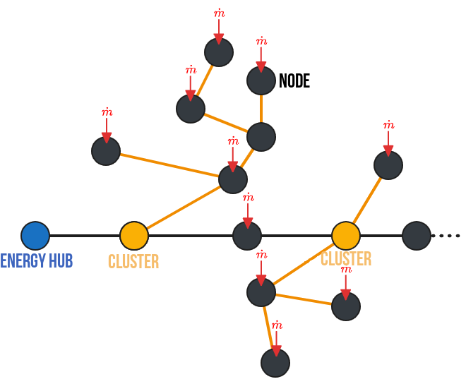
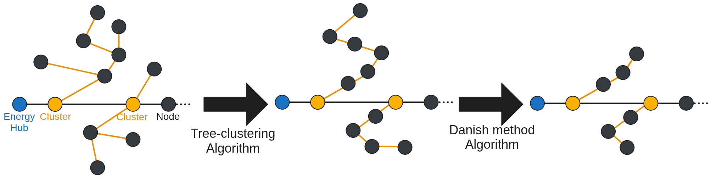
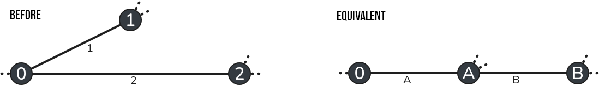
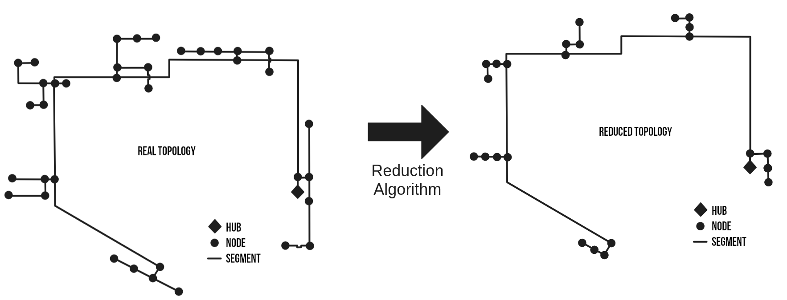
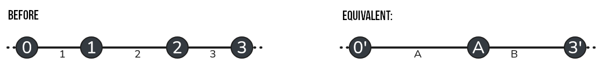

Documentation
1. Defining network
1.1 Topology formalism
The first methodological step when using the PipingTool is to define the network. This involves formalizing the network in a language that is, on the one hand, understandable to humans and, on the other, flexible and logical for the machine. Let’s review a few terms and methods frequently used to formalize heating networks. Complex networks are mathematically represented by directed graphs (Lickeder et al. [1]). A directed graph G is a pair (N, E) consisting of N, the set of junctions (called nodes), and E, the set of pipes (called edges). Edges can be considered as pairs of two nodes (N{i}, N{j}) or N{i}, N{J} \in N. Edges are therefore directed: they are arrows pointing from one node in the network to another. To indicate a flow in the opposite direction of this arrow, negative flow rates can be assigned. However, this method is risky when working in the TRNSYS environment, which only considers positive flow rates in all of its components. Finally, we will assume that the entire system is symmetrical in terms of its physical behavior: the same flow rates pass through the supply and return pipes. We will size them identically, assuming an average temperature $T=(T_{supply}-T_{return})/2$. Thus, two networks will be defined and sized subsequently ($G_{heat}$ and $G_{cool}$). Their spatial configuration is identical, but their operating temperatures and loads differ.
We can thus define the topology of a network as a set consisting of:
- A vector of nodes. Each node is characterized by its name and the presence of an inflow or outflow from the network (i.e., the loads of a building).
- A vector of segments. Each segment is characterized by a node pair (in the format {From, To}), by its geometric information (length, inner and outer pipe diameters, volume, cross-sectional area), as well as by the maximum flow rates and loads passing through it, and its thermal properties (total and linear thermal conductivity, insulation thickness).
- A vector of subnetworks. A subnetwork is defined as all child nodes of a parent node. This assumes unidirectional flow rates and a loop-free tree structure. Consequently, it is possible to identify all the nodes and segments of each subnetwork. In our formalism, a subnetwork is defined by specifying the name of the parent node. The other characteristics of the subnetwork can be deduced automatically.
- A main node (responsible for load balancing). The main station is connected to this node. In a fourth-generation network with unidirectional data flows, all data flows originate from and return to this node.

1.2 Documentation of built-in types
Here are the built-in types used for the network formalism.
Main.PipingTool.TopologyStruct.Node — Type
NodeStructure of node element for network graph. Attributes are:
id: (Int8) Node unique id.Name: (String) Node unique name.LoadsName: (Vector{String}) Name of the loads column in loads dataframe, loads must be in kj/hr.Q̇t: (Vector{Float64}) Loads input for Node in kJ/hr.
Main.PipingTool.TopologyStruct.Segment — Type
SegmentStructure for segment element of network graph. Attributes are:
id: (Int8) Segment unique id.name: (String) Segment unique name.FromTo: (Tuple{String, String}) Couple of (Supply node ID, return node ID)LoadsName: (Vector{String}) Name of the loads column in loads dataframe, loads must be in kj/hrṁ: (Float64) [kg/s] Nominal flowrate in segmentDi: (Float64) [m] Segment inner diameterDo: (Float64) [m] Segment outer diameter (before insulation)L: (Float64) [m] Segment lengthA: (Float64) [m²] Segment fluid areae: (Float64) [m] Insulation thicknessV: (Float64) [m3] Volume of segmentQ̇: (Float64) [kJ/hr] Nominal load in segmentH: (Float64) [W/(m.K)] heat conductivity of segment
Main.PipingTool.TopologyStruct.Cluster — Type
ClusterStructure for cluster element of network graph. A cluster element is defined at a node level (using the node_name attribute). From this, assuming a tree-like structure (no loops), the child segments and nodes will be identified. Attributes are:
id: (Int8) Cluster ID.node_name: (String) Cluster origin node name. Must be one of Node names.node_id: (Int8) Cluster origin node ID. Must be one of Node ID.Segments_in_cluster: (Vector{String}) List of all segments in cluster.Loads_in_cluster: (Vector{String}) List of all loads in cluster.
Main.PipingTool.TopologyStruct.System — Type
SystemStructure for defining a complete network. Attributes are:
Name: (String) Name of the network/topologyNodes: (Vector{Node}) contains all the network nodes.Segments: (Vector{Segment}) contains all the network segments.Cluster: (Vector{Cluster}) contains all the network clusters.EnergyHub: (String) Is the name of the node to use as a main station for equilibrating loads.
1.3 Documentation of built-in functions for topology
The following functions are used when creating a network topology:
Main.PipingTool.TopologyStruct.add_new_segment — Function
add_new_segment(Topology, From, To, Length)Function to add a new segment to existing Topology (automatically handling segment id).
Arguments
Topology: (System) A System struct object of a network topology.From: (String) Name of a node. Origin of segment.To: (String) Name of a node. Destination of segment.Length: (Float64) Length of segment.
Main.PipingTool.TopologyStruct.add_new_node — Function
add_new_node(Topology, name, LoadNames, QDataframe)Function to add a new node to existing Topology (automatically handling node id).
Arguments
Topology: (System) A System struct object of a network topology.name: (String) Name of the node.LoadNames: (Vector{String}) List of loads columns that are to be associated to this node.QDataframe: (DataFrame) Dataframe where LoadsNames are to be found.
Main.PipingTool.TopologyStruct.add_new_cluster — Function
add_new_cluster(Topology, name)Function to add a new cluster to existing Topology (automatically handling cluster id).
Arguments
Topology: (System) A System struct object of a network topology.name: (String) Name of the node to take as cluster origin.
The following functions are auxiliary functions used for various steps:
Main.PipingTool.TopologyStruct.get_SegmentLoads — Function
get_SegmentLoads(Topology, EnergyHub)Function to distribute all of nodes loads to segments of the topology. A loads flows from its origin node to the energy hub (defined as EnergyHub), loads is distributed to all segments it encounter in its path.
Arguments
Topology: (System) A System struct object of a network topology.EnergyHub: (String) Name of the node to take as the topology EnergyHub, where main station is located and where all loads flows to.
Main.PipingTool.TopologyStruct.get_Node_ChildSegmentsAndNodes — Function
get_Node_ChildSegmentsAndNodes(Topology, N)Function that return all child nodes and segments of a cluster origin node. Assuming tree-like topology without loop (single path from every node to cluster origin node).
Arguments
Topology: (System) A System struct object of a network topology.N: (String) Name of the node where cluster origin is located.
Outputs
ChildList: (Vector{String}) List of child nodes.SegmentList: (Vector{String}) List of child segments.
Main.PipingTool.TopologyStruct.see_graph — Function
see_graph(Topology)Function that use SimpleGraph representation to display node topology as a beautiful figure.
Arguments
Topology: (System) A System struct object of a network topology.scenarioName: (String) Name of folder of scenario for output png.
Main.PipingTool.TopologyStruct.exportTopologySegment_ToCSV — Function
exportTopologySegment_ToCSV(Topology, scenarioName, prefix, append, colName)Function that export the network topology as different CSV files. Generate one CSV for pipes parameters and one CSV file for each clusters for their loads.
Arguments
Topology: (System) A System struct object of a network topology.scenarioName: (String) Folder of the scenario where to generate the CSV of topology.prefix: (String) Prefix to use before each segment name.append: (Boolean) True or False for appending an existing CSV file.colName: (String) Name of the column for cluster loads files.
2. Selecting reference pipes
2.1 Water properties functions
Here are the functions used to determined water characteristics depending on mean temperature.
Main.PipingTool.WaterProperties.density — Function
density(T::Real)Liquid water density (kg/m³), valid between 0 °C and 100 °C Regression based on EES data at 200 kPa, valid for moderate pressures (100 - 500 kPa) as long as water is liquid Error within ± 0.03 %
Arguments
T : temperature in °C
Outputs
density : density in kg/m³
Examples
density(60) gives 983.219 (EES answer, Water, P=101.325 kPa: 983.196)
Main.PipingTool.WaterProperties.specheat — Function
specheat(T::Real)Liquid water specific heat (J/kg-K), valid between 0 °C and 100 °C Regression based on EES data at 200 kPa, valid for moderate pressures (100 - 500 kPa) as long as water is liquid Error within ± 0.05 %
Arguments
T : temperature in °C
Outputs
specheat : specific heat in J/kg-K
Examples
specheat(60) gives 4185.74 (EES answer, Water, P=101.325 kPa: 4184.95)
Main.PipingTool.WaterProperties.dynviscosity — Function
dynviscosity(T::Real)Liquid water dynamic viscosity (kg/m-s), valid between 0 °C and 100 °C Regression based on EES data at 200 kPa, valid for moderate pressures (100 - 500 kPa) as long as water is liquid Error within ± 0.05 %
Arguments
T : temperature in °C
Outputs
dynviscosity : dynamic viscosity in kg/m-s
Examples
dynviscosity(60) gives 0.00046744 (EES answer, Water, P=101.325 kPa: 0.000466035)
2.2 Get each pipe properties
To ensure the pipes are realistic from a hydraulic standpoint, it is important to verify that the flow rate through them is neither too low nor too high, so that pressure losses in the pipes do not play an overly significant role in modeling the network’s behavior. To do this, we assume a minimum flow rate of 10% of the maximum flow rate during network operation. Finally, and most importantly, we want to ensure that the sizing of the network’s pipes limits pressure losses to below a maximum threshold, set arbitrarily by default ($\Delta P_{max}=220$ [Pa/m]). To do this, we proceed in several steps:
- First, for each segment, we calculate the maximum flow rate.
- Second, we calculate the pressure losses associated with this maximum flow rate for a set of reference pipes (from Nussbaumer et al. [2]). These reference pipes provide information on the pipe geometry as well as the linear thermal conductivities of the pipe, which are assumed to be constant and equal to $k_{steel} = 15$ [W/(m·K)] and $k_{insulation} = 0.027$ [W/(m·K)].
- Third, we select the pipe with the largest diameter whose pressure losses are below the set threshold.
- Fourth, we calculate the remaining properties of the pipes in the network (including the insulation thickness).
Those steps are realized by the following function:
Main.PipingTool.select_pipes — Function
select_pipes(Topology, Tsupply, Treturn, QDataframe, Δp′_max)This function will calulate each segments properties following the steps described below:
- Calculate design temperature conditions ('ΔT= Tsupply - Treturn' and 'T = Tsupply - ΔT/2') and water properties ('cₚ', 'rho' and 'mu').
- Get nominal loads 'Q̇max' and nominal flowrate 'ṁ' for each pipe.
- Load pipes reference data file.
- Calculate pressure drop for each segment using Reynolds number and Darcy-Weisbach equations.
- Choose appropriate reference pipe for each segment.
- Save properties of each segments using their chosen reference pipe.
Arguments
Topology: (System) A System struct object of a network topology.Tsupply: (Float64) [°C] Supply temperature of pipes in network.Treturn: (Float64) [°C] Return temperature of pipes in network.QDataframe: (DataFrame) Dataframe where loads are to be found (used for maximum loads and flowrate calculation).Δp′_max: (Float64) [Pa/m] Maximum authorized pressure drop in segments.
3. Agregation method: Simplification algorithm
The goal of this algorithm is to obtain an equivalent network consisting of a single node. As far as we are concerned (and what interests us most), we want an equivalent pipe with thermal properties very close to those of the subnetwork. That is why our equivalence is defined by preserving the total heat losses, the total flow rate (i.e., the total loads), and the total volume of the subnetwork. This algorithm is carried out in two steps. First, the equivalent diameter is set to the maximum diameter of the pipes in the subnetwork (to limit the length of the equivalent pipe and, above all, to simplify the equivalence calculations). Second, the conservation equations for flow rate, volume, and thermal conductivity of the pipes are used to calculate the remaining characteristics of the equivalent pipe. The equations used are grouped and presented in the following table.
| Equivalent characteristic | Equivalent branch |
|---|---|
| Length [m] | $L_{eq}=\frac{V_{eq}}{A_{eq}}$ |
| Cross-sectional area [m²] | $A_{eq}=A_{selected}$ |
| Volume [m³] | $V_{eq}=\Sigma V$ |
| Internal diameter [m] | $Di_{eq}=Di_{selected}$ |
| External diameter [m] | $Do_{eq}=Do_{selected}$ |
| Flow rate [L/s] | $\dot{m}_{eq}=\Sigma \dot{m}$ |
| Thermal conductivity [W/°C] | $H_{eq}=\Sigma H$ |
| Insulation thickness [m] | $e_{eq}=\frac{Do_{eq}}{2} \cdot (e^{2\cdot\pi\cdot k_{ins} \cdot L_{eq} / H_{eq}}- 1)$ |
Those steps are realized by the following function:
Main.PipingTool.SimplifyingClusterAlgorithm — Function
SimplifyingClusterAlgorithm(Topology)Full algorithm for simplifying branches of every cluster of a network. Will calculate an equivalent node and an equivalent segment for every cluster; representing clusters as one equivalent node and segment. This method preserve pipes insulation factor k_ins [W/m*K], total volume of fluid [m3] and total heat losses [W/K].

Arguments
Topology: (System) A System struct object of the reference network topology.
Outputs
Topology: (System) A System struct object of the simplified network topology, .
4. Agregation method: Reduced algorithm
4.1 Algorithm description
This method aims at reducing the network complexity, while preserving not only flow rate, volume, and thermal conductivity but also loads delay to the energy hub. Following algorithms are based on the work of Larsen H. et al[3]. The following figure shows the two-step method used for the reduced algorithm: first a clustering-tree algorithm, second a danish method algorithm.

4.2 Collapsing tree algorithm
This method describes the equations used to transform an intersection between two branches into an equivalent linear network, as shown in previous figure. Branches 1 and 2 become branches A and B. This algorithm is repeated as many times as necessary so that each subnetwork is “collapsed” into a linear network. We will use the indices 1, 2, A, and B to refer, respectively, to the branches between nodes 1, 2, A, and B. Following table lists the variables introduced for this algorithm.
| Variable | Value |
|---|---|
| $\alpha$ | $m_2/m_1$, $\alpha>0$ |
| $\beta$ | $1+\alpha$, $\beta>1$ |
| $\gamma$ | $\gamma=V_1/V_2\cdot\alpha$ |
| $\phi$ | $C_w/(C_w+C_p)$, $0<\phi<1$ |
| $\psi$ | $\phi_2/\phi_1$ |
The method is applicable if the following conditions are met/accepted:
- The power flows in the substations vary proportionally (in reality, this condition is almost never met).
- The delay of branch A is equal to the delay of branch 1 ($\tau_A=\tau_1$), and the delay of branch A+B is equal to the delay of branch 2 ($\tau_B=\tau_2-\tau_1$). Thus, the delay of branch 1 must be equal to or less than the delay of branch 2 (otherwise, it is possible to reverse the definition of branches 1 and 2).
- The following are conserved: the volume of water ($V_A+V_B=V_1+V_2$), the mass flow rates ($m_A+m_B=m_1+m_2$), the node loads ($P_A+P_B=P_1+P_2$), and the heat losses ($Q_A+Q_B=Q_1+Q_2$).
- Branch B is arbitrarily chosen to be identical to branch 2 (except for length and insulation): $Di_B=Di_2$, $Do_B=Do_2$, $A_B=A_2$, $\Phi_B=\Phi_2$, $\mu_B=\mu_2$. This choice greatly simplifies the equations and is easily justified from a physical standpoint.
Based on these assumptions, we can then calculate all the characteristics of the equivalent network, summarized in the following table.
| Equivalent characteristic | Branch A | Branch B |
|---|---|---|
| Length [m] | $L_A = L_1\cdot\frac{1+\alpha²\cdot\psi\cdot\frac{A_1}{A_2}}{\beta}$ | $L_B = L_2\cdot(1-\gamma \cdot\psi)$ |
| Cross-sectional area [m²] | $A_A=\frac{\beta \cdot (1+\alpha\psi)\cdot A_1 \cdot A_2}{A_2+A_1\cdot\alpha²\cdot\psi}$ | $A_B=A_2$ |
| Volume [m³] | $V_A = L_A \cdot A_A$ | $V_B = A_2 \cdot L_2 \cdot (1 - \gamma \cdot \psi)$ |
| Internal diameter [m] | $Di_A = 2 \cdot \sqrt{\frac{A_A}{\pi}}$ | $Di_B = Di_2$ |
| Inner diameter [m] | $Di_A = 2*\sqrt{\frac{A_A}{\pi}}$ | $Di_B = Di_2$ |
| Outer diameter [m] | $Do_A = Di_A * \sqrt{1+\left( \frac{\rho_w \cdot c_w}{\rho_p \cdot c_p} \right) \cdot \left( \frac{1 - \phi_A}{\phi_A} \right)}$ | $Do_B = Do_2$ |
| Flow rate [L/s] | $\mu_A=\mu_1+\mu_2$ | $\mu_B=\mu_2$ |
| Thermal conductivity [W/°C] if $\frac{H_2}{H_1}<\frac{m_2}{m_1}$ | $H_A=H_1 + \gamma \cdot \psi \cdot H_2$ | $H_B=H_2 \cdot (1-\gamma \cdot\psi)$ |
| Thermal conductivity [W/°C] if $\frac{H_2}{H_1}>\frac{m_2}{m_1}$ | $H_A = (1+\alpha) \cdot H_1$ | $H_B=H_2 - \alpha \cdot H_1$ |
| Insulation thickness [m] | $e_{A}=\frac{Do_A}{2} \cdot (e^{2\cdot\pi\cdot k_{ins} \cdot L_A / H_A} - 1)$ | $e_{B}=\frac{Do_B}{2} \cdot (e^{2\cdot\pi\cdot k_{ins} \cdot L_B / H_B}- 1)$ |
Those steps are realized by the following function:
Main.PipingTool.CollapsingClusterAlgorithm — Function
CollapsingClusterAlgorithm(Topology, T)Full algorithm for collapsing branches of every cluster of a network. Will use successively the CollapsingParallel function in each cluster until all branches are collapsed and cluster is a line of segments.
Arguments
Topology: (System) A System struct object of the reference network topology.T: (Float64) [°C] Mean temperature of pipes in network.
Outputs
Topology: (System) A System struct object of the collapsed network topology, .
Main.PipingTool.CollapsingParallel — Function
CollapsingParallel(Topology, pipe1, pipe2, T)Function for Collapsing branch pipe1 on branch pipe2. Will result in two equivalent branches as shown on figure. Using Larsen et al. (2002) method for collapsing branches described in this paper. This method preserve pipes insulation factor k_ins [W/m*K], total volume of fluid [m3] and total heat losses [W/K], and loads delay.

Arguments
Topology: (System) A System struct object of the reference network topology.pipe1: (Segment) A Segment struct object where pipe2 will be collapsed.pipe2: (Segment) The Segment struct object that will be collapsed on pipe1. Origin of segment must be the same as pipe1.T: (Float64) [°C] Mean temperature of pipes in network.
Outputs
Topology: (System) A System struct object of network topology after the collapsing algorithm.
4.3 Danish method algorithm
The goal of this algorithm is to simplify linear networks, from a configuration with three segments to one with two segments. For this algorithm, the notation remains the same as in the previous section; however, new temporary variables are used, as summarized in following table. This algorithm is repeated as many times as necessary to reduce each linear subnetwork to a subnetwork with three nodes.
| Variable | Value |
|---|---|
| $X$ | $\frac{\rho_p \cdot c_p}{\rho_w \cdot c_w}$ |
| $f_A$ | $f_A=\frac{m_2}{m_1+m_2}$ |
| $f_B$ | $f_B=\frac{m_1}{m_1+m_2}$ |
| $g_{AA}$ | $g_{AA}=\frac{f_A \cdot \tau_2}{\tau_1+f_A \cdot \tau_2}$ |
| $g_{AB}$ | $g_{AA}=\frac{\tau_1}{\tau_1+f_A \cdot \tau_2}$ |
| $g_{BA}$ | $g_{BA}=\frac{\tau_3}{\tau_3+f_B \cdot \tau_2}$ |
| $g_{BB}$ | $g_{BB}=\frac{f_B \cdot \tau_2}{\tau_3+f_B \cdot \tau_2}$ |
The factors $f_A$ and $f_B$ define the portion of segment 2 that is assigned to segment 1 and the portion assigned to segment 3. Defined in this way, the allocated portion is determined by the loads: if the loads at node 1 are dominant, then branch 2 is mostly allocated to branch B, and thus branch A is virtually identical to branch 1. The loads, in turn, are divided into two parts by the variables $g$ depending on the time delays of each branch. Thus, the majority of a node’s loads are shifted to the node that is temporally closest. In this algorithm, a subnetwork consisting of three segments is reduced to an equivalent subnetwork consisting of two segments. The total length, water volumes, time delays, and heat losses are preserved. From these assumptions, we can then deduce all the characteristics of the equivalent network, summarized in following tables for pipes and for nodes.
| Equivalent characteristic | Branch A | Branch B |
|---|---|---|
| Length [m] | $L_A = L_1+f_A \cdot L_2$ | $L_B = L_3+f_B \cdot L_2$ |
| Variable $\phi$ | $\phi_A=\left( 1+X \cdot \frac{Vp_1+f_A \cdot Vp_2}{V_1+f_A \cdot V_2} \right)^{-1}$ | $\phi_B=\left( 1+X \cdot \frac{Vp_3+f_B \cdot Vp_2}{V_3+f_A \cdot V_2} \right)^{-1}$ |
| Cross-sectional area [m²] | $A_A=V_A/L_A$ | $A_B=V_B/L_B$ |
| Volume [m³] | $V_A=V_1 \cdot \frac{\mu_A \cdot \phi_A}{\mu_1 \cdot \phi_1} + f_A \cdot V_2 \cdot \frac{\mu_A \cdot \phi_A}{\mu_2 \cdot \phi_2}$ | $V_A=V_3 \cdot \frac{\mu_B \cdot \phi_B}{\mu_3 \cdot \phi_3} + f_B \cdot V_2 \cdot \frac{\mu_B \cdot \phi_B}{\mu_2 \cdot \phi_2}$ |
| Pipe volume [m³] | $Vp_A=V_A \cdot \frac{1-\phi_A}{\phi_A \cdot X}$ | $Vp_B=V_B \cdot \frac{1-\phi_B}{\phi_B \cdot X}$ |
| Internal diameter [m] | $Di_A=2 \cdot \sqrt{\frac{V_A}{\pi \cdot L_A}}$ | $Di_B=2 \cdot \sqrt{\frac{V_B}{\pi \cdot L_B}}$ |
| Outer diameter [m] | $Do_A=2\cdot \sqrt{\frac{V_A+Vp_A}{\pi\cdot L_A}}$ | $Do_B=2\cdot \sqrt{\frac{V_B+Vp_B}{\pi\cdot L_B}}$ |
| Flow rate [L/s] | $\mu_A = \mu_1 - g_{AA} \cdot (\mu_1 - \mu_2)$ | $\mu_B = \mu_2 - g_{BA} \cdot (\mu_2 - \mu_3)$ |
| Thermal conductivity [W/°C] | $H_A = H_1 + f_A \cdot H_2$ | $H_B = H_3 + f_B \cdot H_2$ |
| Insulation thickness [m] | $e_A=\frac{Do_A}{2} \cdot (e^{2\cdot\pi\cdot k_{ins} \cdot L_A / H_A} - 1)$ | $e_B = \frac{Do_B}{2} \cdot (e^{2\cdot\pi\cdot k_{ins} \cdot L_B / H_B} - 1)$ |
| Equivalent loads | Value |
|---|---|
| 0' | $\dot{Q}_{0'}=\dot{Q}_0+g_{AA}\cdot \dot{Q}_1$ |
| A | $Q_A=g_{AB}\cdot \dot{Q}_1+g_{BA}\cdot \dot{Q}_2$ |
| 3' | $\dot{Q}_{3'}=g_{BB}\cdot \dot{Q}_2+\dot{Q}_3$ |
Those steps are realized by the following function:
Main.PipingTool.ReductingClusterAlgorithm — Function
ReductingClusterAlgorithm(Topology, T, ΔT)Full algorithm for reducing branches of every cluster of a network. Will use successively the ReducingSerialDanish function in each cluster until cluster is reduced to a 3 nodes line.

Arguments
Topology: (System) A System struct object of the reference network topology.T: (Float64) [°C] Mean temperature of pipes in network.ΔT: (Float64) [°C] Difference of temperature between supply and return pipes in the network.
Outputs
Topology: (System) A System struct object of the reduced network topology, .
Main.PipingTool.ReducingSerialDanish — Function
ReducingSerialDanish(Topology, pipe1, pipe2, T)Function for reducing branch R2 on branch R1 and R3. Will result in two equivalent branches as shown on figure. Using Larsen et al. (2002) method for reducing branches described in this paper. This method preserve pipes insulation factor k_ins [W/m*K], total volume of fluid [m3] and total heat losses [W/K], and loads delay.

Arguments
Topology: (System) A System struct object of the reference network topology.R1: (Segment) The Segment struct object before R2. Segment destination must be R2 origin.R2: (Segment) The Segment struct object that will be reduced on R1 and R3.R3: (Segment) The Segment struct object after R2. Segment origin must be R2 destination.T: (Float64) [°C] Mean temperature of pipes in network.
Outputs
Topology: (System) A System struct object of network topology after the collapsing algorithm.